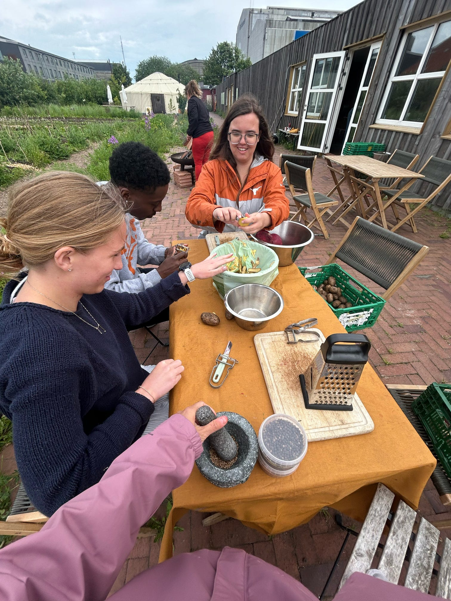

To Scandinavia
The first location we visited was Oens Have, a farm and restaurant that sits on land with a difficult past. Once industrial, the land is now polluted in ways that make even basic planting a challenge. [NAME] explained how they often have to strip away contaminated soil before anything can grow, and how this reality shaped their mission: farming here is as much about teaching as producing. With limited land, they use intensive methods like mushroom cultivation and vertical farming, but they also work hard to stay connected to the community. Many city residents don’t know what grows in their own climate or what real produce tastes like, so the farm partners with schools, hosts volunteer days, and runs a CSA to help people relearn the rhythms of seasons and the value of food. Everything they grow is organic and used on-site, especially in their plant-focused restaurant built around the idea that if you couldn’t kill it, maybe you shouldn’t eat it. They rely on volunteers and school visits for funding because the city provides none, and every building on the farm is technically temporary while they wait to see what urban plans come next.
Despite the uncertainty, the farm is full of life. About 55 people work here, supported by neighboring farms and a community eager to participate in something meaningful, whether that’s a volunteer day, or a shared meal at one of their “dinners on the farm.” The team dreams big even as they face complex challenges around climate change, regulations, and the fragile economics of sustainable food. They talked openly about the contradictions in Denmark’s food system and how high-quality produce is expensive, and how large industries like pork production leave pollution behind while exporting profit elsewhere.